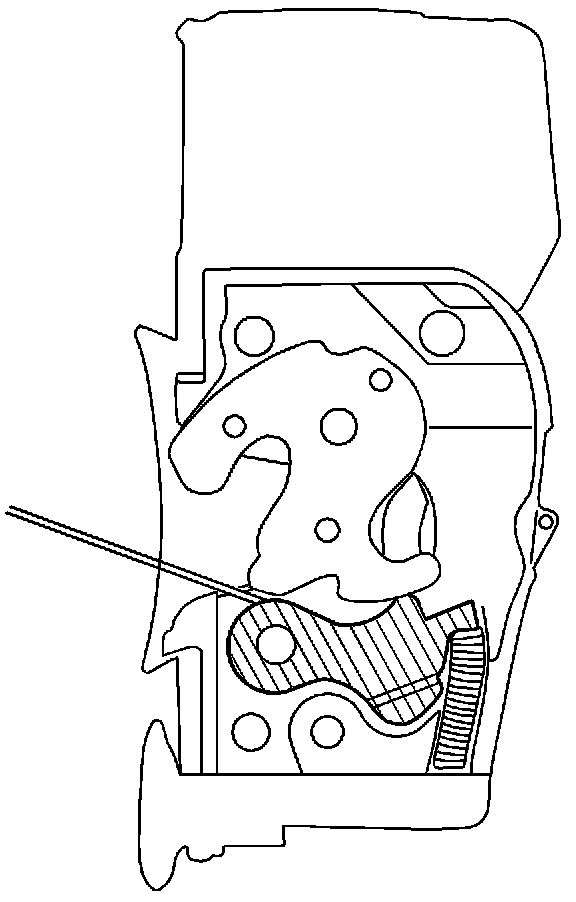
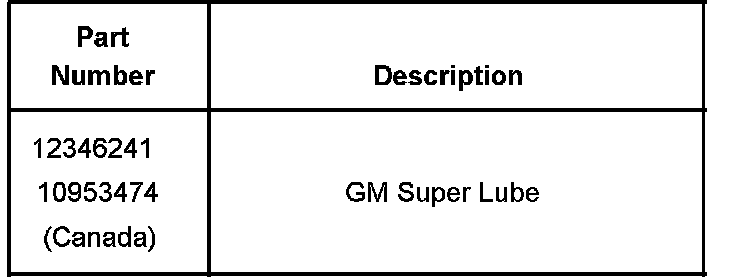
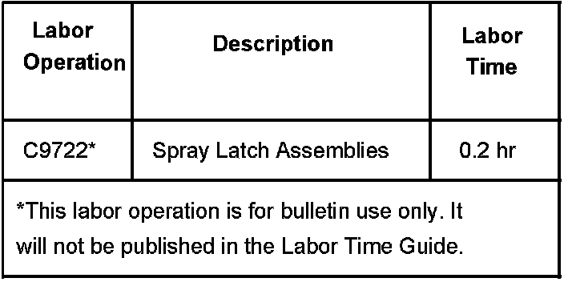

Body - Door Latches Freezing in Extreme Cold
Bulletin No.: 05-08-64-002BDate: April 03, 2006
TECHNICAL
Subject:
Door Latch Freezing in Cold Temperatures (Apply Super Lube)
Models:
2005-2007 GM Passenger Cars and Trucks (Including Saturn)
2003-2006 HUMMER H2
2006 HUMMER H3
Supercede:
This bulletin is being revised to add models and model years. Please discard Corporate Bulletin Number 05-08-64-002A (Section 08 - Body and Accessories).
Condition
Some customers may comment on a door latch freezing due to ice accumulation in cold temperatures.
Cause
Water from a car wash or off the road may have entered the latch and frozen, causing the detent to move slowly.
GM Super Lube(R) has been found to be an ideal solution to resolve latch freezing.
Correction
1. Verify that the striker properly engages the latch and that no obstructions are preventing the door from closing.

Important:
The latch and its backing plate have been removed on the above illustration to show the location for the lube.
2. Allow the latch to completely thaw and apply compressed air for two seconds to the latch to force out any moisture. Refer to the above illustration (slashed area) for the location. Spray GM Super Lube(R) on BOTH sides of the latch detent lever for approximately two to three seconds. Refer to the above illustration (slashed area) for the lube location. Repeat for all door latches. Operate the door latch several times to spread the lubricant on all surfaces.

Parts Information
Warranty Information

For vehicles repaired under warranty, use the table.

Disclaimer